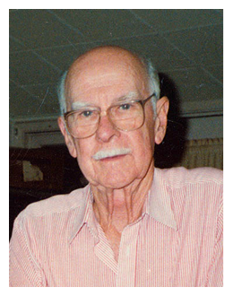
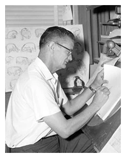
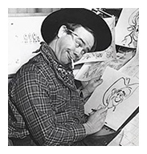
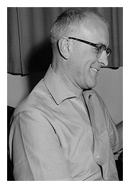

Furono i creatori delle opere Disney più famose, da Biancaneve e i Sette Nani e Le Avventure di Peter Pan. Walt Disney scherzosamente chiamava questo gruppo di animatori il suo Nine Old Men, in riferimento a Franklin D. Roosevelt e ai nove giudici della Corte Suprema degli Stati Uniti.

1. Les Clark
Les Clark (1907 - 1979), entrò nella Walt Disney Company nel 1927. La sua specialità era l'animazione di Topolino.

2. Ollie Johnson
Ollie Johnston (1912 - 2008), che entrò agli studi nel 1935, lavorò su Biancaneve. Il suo lavoro di animatore incluse Le avventure di Peter Pan, Cenerentola, Le avventure di Ichabod e Mr. Toad, e il principe Giovanni di Robin Hood.

3. Frank Thomas
Frank Thomas (1912 - 2004) entrò alla Disney nel 1934. Il suo lavoro si incentrò sulla realizzazione dei personaggi antagonisti come Lady Tremaine, la Regina di Cuori e Capitan Uncino. Sua è la scena della cena a base di spaghetti di Lilli e il Vagabondo.

4. Wolfgang Reitherman
Wolfgang Reitherman (1909 - 1985) entrato alla Disney nel 1935 come animatore e regista, diresse tutti i film animati Disney dopo la morte di Walt, fino al suo pensionamento. Alcuni dei suoi lavori compresero la balena di Pinocchio, il Coccodrillo Cocò, Malefica drago e il Ratto.

5. John Lounsbery
John Lounsbery (1911 - 1976) iniziò nel 1935 e, lavorando sotto Norm ‘Fergy’ Ferguson, divenne rapidamente una superstar animatoriale. Si è occupato dell'animazione di Fantasia; ha animato il Padre in Le Avventure di Peter Pan, Tony, Joe, e alcuni dei cani in Lilli e il Vagabondo, Il re Stefano ne La Bella Addormentata nel Bosco, gli elefanti ne Il Libro della Giungla e etc...

6. Eric Larson
Eric Larson (1905 - 1988) aveva aderito nel 1933. Uno dei primi animatori Disney, ha animato caratteri di rilievo come Peg in Lilli e il Vagabondo, gli avvoltoi in Il Libro della Giungla o il volo su Londra di Le Avventure di Peter Pan. A Larson venne affidato il compito di individuare e formare nuovi animatori Disney negli anni settanta: molti dei migliori talenti che lavorarono alla Disney negli anni successivi, ed ancor oggi, furono formati da Eric negli anni settanta e ottanta.

7. Ward Kimball
Ward Kimball (1914 - 2002) entrò alla Disney nel 1934. Il suo lavoro comprende Lucifero, Jac e Gas-Gas, il Cappellaio matto e lo Stregatto. Il suo lavoro è stato spesso più "selvaggio" rispetto agli altri animatori Disney e soprattutto è stato unico nel suo genere.

8. Milt Kahl
Milt Kahl (1909 - 1987) iniziò nel 1934 lavorando su Biancaneve e i Sette Nani. Lavorò su Shere Khan, Edgar il maggiordomo, e lo sceriffo di Nottingham.

9. Marc Davis
Marc Davis (1913 - 2000) ha iniziato nel 1935 a Biancaneve e i Sette Nani, e più tardi proseguì a sviluppare e animare i personaggi di Bambi e Tippete, Malefica e il corvo e Crudelia De Mon . Davis è stato riconosciuto di character design, sia per i "Pirati dei Caraibi" che per "La casa dei Fantasmi", attrazioni del parco di Disneyland.